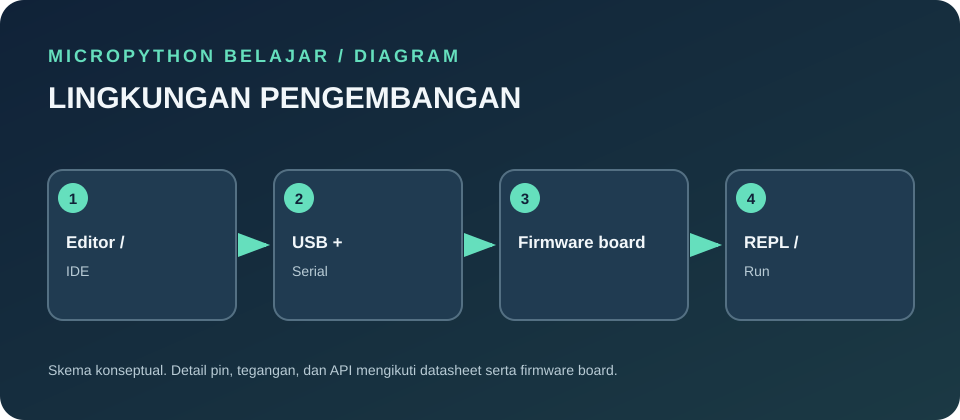

Menyiapkan alat dan lingkungan kerja
Kenali board, kabel, driver, firmware, dan port serial sebelum mulai menulis program.

Perlengkapan dasar
- Board mikrokontroler yang didukung MicroPython.
- Kabel USB yang mendukung transfer data, bukan kabel charge-only.
- Komputer Windows, Linux, atau macOS.
- Driver USB-to-serial sesuai chip antarmuka board, misalnya CP210x atau CH340 jika diperlukan.
- Firmware MicroPython resmi sesuai jenis chip dan varian board.
- IDE atau terminal serial seperti Thonny, mpremote, atau esptool.
Identifikasi board sebelum mengunduh firmware
Nama penjual seperti “ESP32 board” sering tidak cukup. Periksa tulisan pada modul: ESP32, ESP32-S3, ESP32-C3, ESP8266, RP2040, atau model lain. Keluarga chip ESP32 yang berbeda membutuhkan firmware berbeda. Periksa juga kapasitas flash dan varian modul.
Memeriksa port serial
Di Windows, buka Device Manager lalu periksa Ports (COM & LPT) setelah board dicolokkan. Di Linux, port biasanya muncul sebagai /dev/ttyUSB0 atau /dev/ttyACM0. Di macOS, perangkat dapat muncul sebagai /dev/cu.* sesuai adaptor serial.
Unduh firmware dari sumber resmi
Gunakan halaman unduhan MicroPython. Pilih keluarga chip yang tepat dan utamakan rilis stabil. Simpan nama file firmware agar dapat dilacak. Build development mungkin memiliki fitur atau perubahan yang belum tersedia pada rilis stabil.
Tools yang akan digunakan
| Tool | Kegunaan |
|---|---|
| Thonny | IDE grafis untuk pemula, REPL, editor dan upload file. |
| esptool | Flashing dan pengelolaan flash pada perangkat Espressif. |
| mpremote | REPL, transfer file, dan manajemen perangkat MicroPython. |
| PuTTY / terminal serial | Komunikasi serial dan akses REPL. |
Checklist
- Board teridentifikasi dengan jelas.
- Kabel USB dapat mentransfer data.
- Port serial tampil di sistem operasi.
- Firmware berasal dari sumber resmi dan sesuai chip.
- IDE atau tool flashing sudah tersedia.